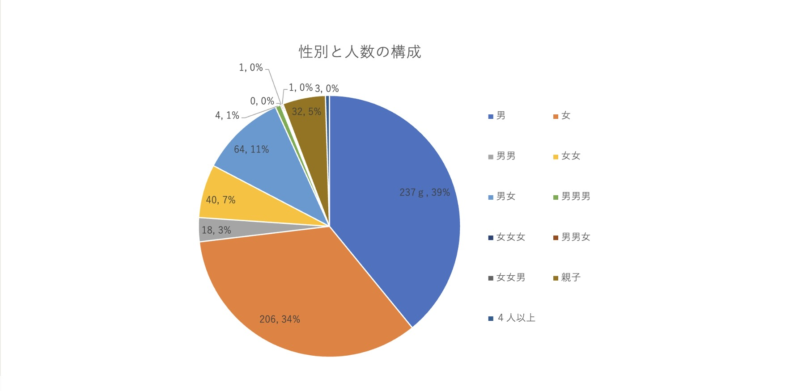
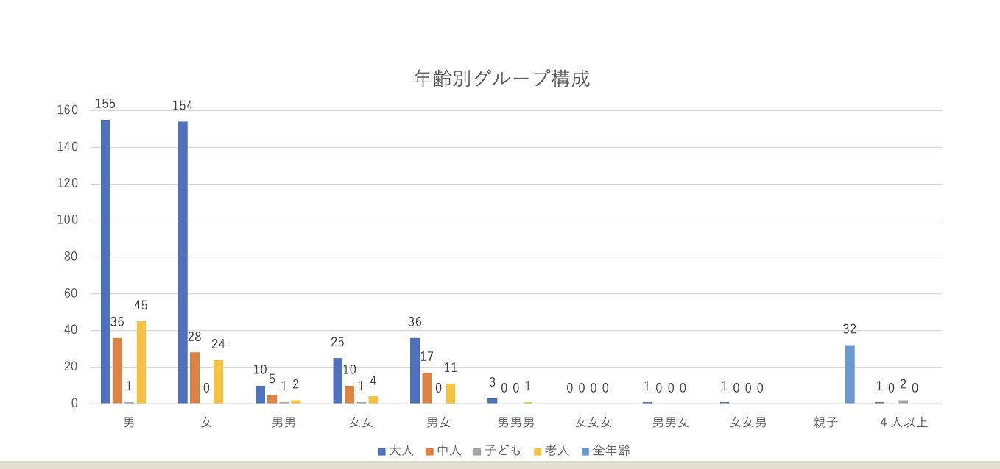

フィールドワーク（１班） 実施結果
観察内容
- ジャンル：住
- 観察内容：みなとみらいキャンパス周辺を歩く人々のグループ構成
- 観察場所：mark is みなとみらいと横浜美術館の間の大通り
- 観察日時：2021年10月19日 14:30~15:30（曇り）
- 確認事項：グループ構成員の人数、年齢、性別
※当初、人物像も観察しようとしたが、カウントが間に合わなくなりそうになり断念
- 観察方法：人数→目視でカウント・4人以上のグループは滅多におらず纏めて集計、
年齢→具体的な年齢が判断できず、大人（社会人)・中人(中高校生・大学生)・小人（〜小学生)・老人で目視判断
性別→男女で目視判断・幼児は性別判断できず「親子枠」でカウント
観察結果

対象：606組、画像は授業内で使用したパワーポイントより参照
（こちらからダウンロード）
- 当観察日時で一番多かったのは、男女ともに一人のケースであった。その次に多かったのは男女のペア、親子であった。
- 年齢別で最も多かったケースは大人のグループであった。次に多かったのは老人であった。
結果からの考察(可能性)
- 一人のケースが多かったのは、①大抵の人は学校や仕事があり家に残った人だけが出かけるしかなかった為、②コロナウイルス感染を懸念して団体で行動することが未だ憚られた為、③近年「お一人様」への抵抗が減っている為、と考える。
- 男女ペアが次に多かったのは、みなとみらいに複合施設が多く観光（デート）スポットである為、
親子連れが多かったのは、観察場所はみなとみらいのタワマンエリアから近く噴水やベンチなどもあり子供と散歩するのに適切であった為、と考える。
- 大人・老人のグループが多かったのは①学生は平日午後に学校があった為、②有給や自営業、リタイヤなどで平日が休みの大人や老人が多くなった為、と考える。
感想・反省
- みなとみらいは有名な観光地である為、遊びたい中人（学生）や大人数のグループが最も多いと思っていたが、想定と異なる結果が出て興味深かった。
実際にその場で自身の目で確認することの必要性がよくわかった。
- 私は１０代後半からショッピングや食事、レジャーを一人で楽しむ「お一人様」であるが、何となくそのような人がマイノリティのような気がして肩身が狭かった。
しかし、平日であれば意外にも「お一人様」が多いことがわかり、安心した。
- 反省点として、幼児を親子としてカウントする際、いくつか親の性別をメモし損ねてしまい考察に必要なデータが欠けてしまった。（男親・幼児が２ペア、女親・幼児ペアが８ペアまでは把握）
もし親の男女比が分かれば、何か別の事実が見えたかもしれない。
参考サイト：
前の画面に戻る